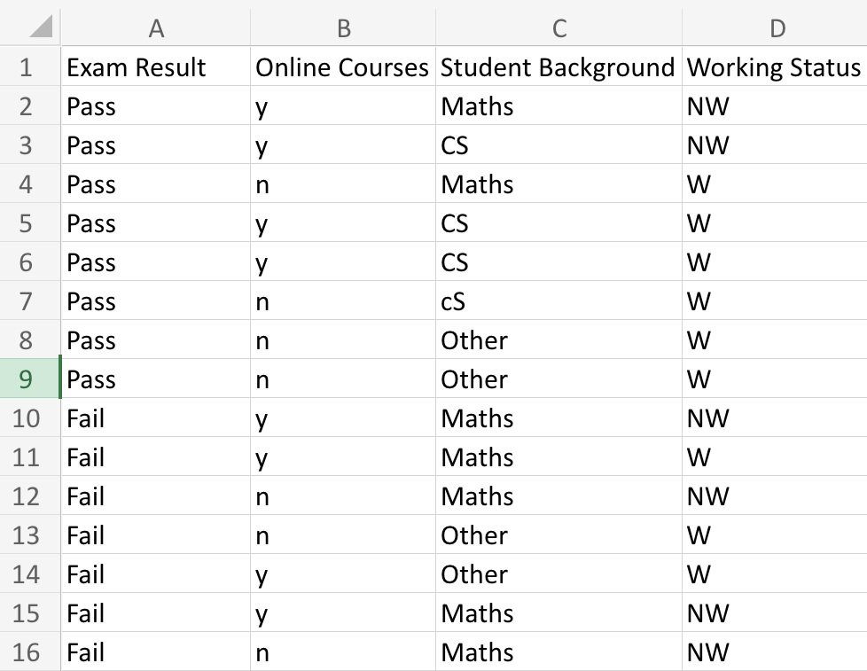
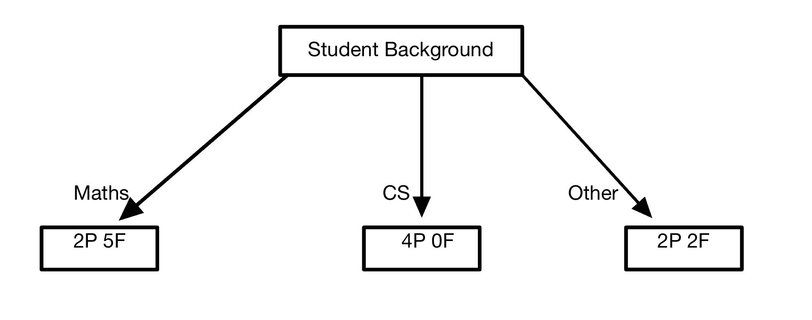

library(ISLR)
library(ISLR2)
library(tidyverse)
library(tidymodels)
library(forcats)
library(ggthemes)
library(naniar)
library(corrplot)
library(corrr)
library(klaR)
library(ggplot2)
library(vip)
tidymodels_prefer()
titanic_data <- read.csv('../data/titanic.csv')
titanic_data_1 <- titanic_data %>%
mutate(survived = factor(survived, levels = c("Yes", "No"))) %>%
mutate(pclass = factor(pclass))Random Forest Vignette
Table of Contents
Under the Hood of Random Forest
Classification Case: Titanic Survival Prediction
Regression Case: Miles Per Gallon Prediction
Random Forest Checklist
References
Under the Hood of Random Forest
This section of our vignette is for those who want to understand the inner workings of random forest algorithms. Note that random forest is an ensemble method, i.e., it combines the results of multiple decision trees, so before we go over a high-level overview of the random forest algorithm, we will first learn about some intuition behind decision trees.
This section will go over the following:
Intuition Behind Decision Trees
Overview of the Random Forest Algorithm
Intuition Behind Decision Trees
Note that we will explain decision trees in the context of solving a classification problem. A decision tree is a rule-based algorithm that systematically divides the predictor space, i.e., the target variable, using a set of rules to split the data points into homogeneous groups. Inner and root nodes represent when a rule is applied to split a predictor (considering that a decision tree follows a binary tree structure). One branch of a node contains the data points that satisfy the node’s rule, while the other contains the data points that break the rule.
The goal is to split the target variable into increasingly homogeneous subgroups compared to its parent node. This process continues until no more rules can be applied or no remaining data points. The nodes at the bottom of the decision tree after the splitting process is over are called terminal or leaf nodes.
The decision tree’s algorithm attempts to split the data into leaf nodes containing only a single class. These nodes are referred to as pure nodes. Not all the leaf nodes of a decision tree will be completely pure, i.e., some leaf nodes will contain a mix of multiple classes. In this case, a classification is made based on a node’s most common data point.
How does a decision tree decide how to split?
Let us explain this using an example. Imagine we want to predict a student’s exam result based on whether they are taking online classes, student background, and working status. To establish the first split, the decision tree algorithm will iterate through splitting each predictor to determine which split results in the most homogenous or pure nodes, and it will evaluate this using some statistical criterion. Variable selection criterion is done using one of the following approaches:
• Entropy and information gain
• Gini index
It is left to the reader to look further into entropy and information gain, but for the purpose of this vignette, we will only explain the use of the Gini index. The following article will take us to a reference for entropy and information gain, and it is available at: https://towardsdatascience.com/entropy-and-information-gain-b738ca8abd2a.
Let the following be our toy data set for this example.

This is the formula for calculating Gini index:

Keep in mind that \(j\) denotes the number of classes, and \(p_j\) signifies the proportion of data points belonging to class \(j\) within the current node.
Splitting by student background, we get three possible child nodes: maths, CS, and others.
While 2 people in “Maths” pass, there are 5 that fail. While 4 people in “CS” pass, there are 0 that fail. While 2 people in “Other” pass, there are 2 that fail.

Let us calculate the Gini index of the child nodes of Student Background.
Maths node: 2P, 5F
\[ Gini_{maths} = 1 - (\frac{2}{7})^2 - (\frac{5}{7})^2 = .4082 \]
CS node: 4P, 0F
\[ Gini_{CS} = 1 - (\frac{4}{4})^2 - (\frac{0}{4})^2 = 0 \]
Other node: 2P, 2F
\[ Gini_{other} = 1 - (\frac{2}{4})^2 - (\frac{2}{4})^2 = .5 \]
The overall Gini index of this split is calculated by taking the weighted average of the 3 nodes.
\[ Gini_{bkgrd} = \frac{7}{15}(.4082) + \frac{4}{15}(0) + \frac{4}{15}(.5) = .3238 \]
Similarly, we will calculate the Gini index for ‘Work Status’ and ‘Online Courses’ predictors.
\[ Gini_{working} = 1 - (\frac{6}{9})^2 - (\frac{3}{9})^2 = .4444 \]
\[ Gini_{not working} = 1 - (\frac{4}{6})^2 - (\frac{2}{6})^2 = .4444 \]
\[ Gini_{workstatus} = \frac{6}{15}(.4444) + \frac{9}{15}(.4444) = .4444 \]
\[ Gini_{online} = 1 - (\frac{4}{8})^2 - (\frac{4}{8})^2 = .5 \]
\[ Gini_{notonline} = 1 - (\frac{3}{7})^2 - (\frac{4}{7})^2 = .4898 \]
\[ Gini_{onlinecourse} = \frac{7}{15}(.4898) + \frac{8}{15}(.5) = .49524 \]
Since the Gini index is lowest for ‘Student Background,’ this predictor becomes the basis for splitting the root node. This concludes the logic behind how the split conditions for decision nodes are created.
Overview of Random Forest Algorithm
The random forest algorithm follows these steps:
1. Take the original dataset and create \(N\) bootstrapped samples of size \(n\) such that \(n\) is smaller than the size of the original data set.
2. Train a decision tree for each of the bootstrapped samples, but split on a different subset of the predictors for each tree and determine the best split using impurity measures such as Gini impurity or Entropy.
3. Create a prediction by aggregating the results of all the trees. In the classification case, take the majority vote across all trees, and in the regression case, take the average across all trees.
Bias-Variance of Random Forest Algorithms
A model with low-bias performs well in finding the true relationships between a data set’s predictors and target variables, and a model with low-variance will do well in generalizing to different input data sets.
Note that bias-variance trade off is an important concept in machine learning. High-bias is error which is most common in models that under fit, and high-variance is error which commonly comes from models which over fit. Our goal is to find the best balance between the two, a model that is not too simple or too complex.
Decision trees tend to over fit to the data, and as a result they have low-bias and high-variance. Note that the decision trees of a random forest algorithm are uncorrelated with one another (since they are each trained on a different subset of predictors), so by aggregating their predictions, we are able to average out this over fitting and reduce variance.
Note that increasing the number of trees in a random forest model retains a low-bias and decreases variance, but it also increases computational costs and run-time.
Random Forest Assumptions
One of the main assumptions of random forests is that the decision trees of the random forest ensemble are uncorrelated, i.e., that the features of the data set are independent and that feature selection for creating splits is random. If decision trees were correlated, then the aggregation of these trees will not reduce variance.
Classification Case: Titanic Survival Prediction
Prerequisites
Copy and paste the following block of code into a new script to load the required packages and data used for this example. If an error appears, then you likely don’t have one of the libraries installed.
Partition
In the process of model construction, a crucial step involves partitioning the data into training and testing sets. The model originally learns patterns from the training set, while the testing set serves as a benchmark to test the performance of the model on unseen data.
The initial_split(titanic_data_1, strata = survived, prop = 0.7) function is used to allocate 70% of the titanic data set into a training set and allocating the other 30% into a testing set while stratifying by the survived variable.
Note that training(parition) and testing(parition) are used to retrieve the training and testing sets, respectively.
set.seed(3435)
parition <- initial_split(titanic_data_1, strata = survived, prop = 0.7)
train_set <- training(parition)
test_set <- testing(parition)Note that we need to stratify by survived because there is an uneven proportion of people who survived the titanic versus those who did not.

K-Folds Cross Validation
K-fold cross validation allows us to train and evaluate the performance of our model on \(k\) different partitions of the training set, reducing the risk of over fitting. The vfold_cv(train_set, v = 5, strata = "survived") function will create 5 training folds of our training set while stratifying by the survived variable. It is left to the reader to look further into k-fold cross validation. Further information can be is available at: https://machinelearningmastery.com/k-fold-cross-validation/.
train_folds <- vfold_cv(train_set, v = 5, strata = "survived")Data Preparation
We will preprocess our data using a recipe from tidymodels. Building a recipe will allow us to provide instructions for preparing and transforming the data before using it to train our model.
The recipe() function will initialize the creation of a recipe, setting survived as the target variable and pclass, sex, age, sib_sp, parch, and fare as predictors.
train.recipe <- recipe(survived ~ pclass + sex + age + sib_sp + parch + fare, data = train_set) %>%
step_impute_linear(age,
impute_with = imp_vars(fare)) %>%
step_dummy(all_nominal_predictors()) %>%
step_interact(terms = ~ starts_with('sex'):fare + age:fare)Note that there is some missing data in the age variable. Using step_impute_linear(age, impute_with = imp_vars(fare)), we will impute missing values of age with linear regression, using fare as a predictor.

Below we create a heat plot to visualize the correlation between the predictors we will be using for our recipe.

As one can see, some of our predictors strongly correlate with the other(s). Thus, in order to capture potentially powerful predictive power through the interactions between highly correlated predictors and avoid inferential misinterpretation, we will include interaction terms in the formula we use to construct our model.
The step_dummy(all_nominal_predictors()) function simply turns all the nominal predictors into dummies.
Model Fitting
The first step is to specify the model’s hyper parameters, engine, and mode.
rf_class_spec <- rand_forest(mtry = tune(),
trees = tune(),
min_n = tune()) %>%
set_engine("ranger", importance = "impurity") %>%
set_mode("classification")The rand_forest(mtry = tune(), trees = tune(), min_n = tune()) function is used to initialize a random forest model and specify the hyper parameters being tuned.
mtry: Number of predictors used to train each decision tree in the random forest, e.g., if we want to build decision trees that were each trained on 3 random predictors of the original training set, then we would setmtry = 3.trees: Number of decision trees to be included in the random forest, e.g., if we only wanted our forest to contain 4 decision trees, then we would settrees = 4.min_n: Minimum number of observations required for further splitting, e.g., if the number of observations within a node falls below this threshold during the tree-building process, then further splitting of this node is halted and it becomes a terminal node.
The set_engine("ranger", importance = "impurity") function allows us to use the random forest implementation from the “ranger” package, and it set the importance method as “impurity”. Note that variable importance is the measure of the contribution that each predictor makes to the predictive performance of the model. The decision trees of a random forest are split on different subsets of predictors, and the impurity method calculates importance by measuring how much each predictor is involved in reducing impurity across all trees.
The set_mode("classification") function simply specifies the model as a classification model.
Next, we simply need to define a model building workflow which is going to combine our random forest classification model (rf_class_spec) and our data preparation recipe (train.recipe).
rf_class_wf <- workflow() %>%
add_model(rf_class_spec) %>%
add_recipe(train.recipe)Afterwards, we will set up a tuning grid with the grid_regular() function to experiment with different variations of the hyper parameters within their defined ranges and apply the tuning grid to the tune_grid() function to find the most optimal configuration.
rf_grid <- grid_regular(mtry(range = c(1, 3)),
trees(range = c(200, 600)),
min_n(range = c(10, 20)),
levels = 8)
#tuning the random forest model
tune_rf <- tune_grid(
rf_class_wf,
resamples = train_folds,
grid = rf_grid
)Finally, we will extract the best configuration of the hyper parameters using the select_best() function, create a finalized version of the random forest workflow with finalize_workflow() , and fit the finalized model using the entire training set with fit().
best_rf <- select_best(tune_rf)
rf_final <- finalize_workflow(rf_class_wf, best_rf)
rf_final_fit <- fit(rf_final, data = train_set)Prediction
To make predictions using the trained random forest model (rf_final_fit), use the predict() function and provide it with new input data (new_data). It is required that the structure of the input data aligns with the predictor variables used during the model training process. Here, we will generate predictions from all the input points in our test set.
new_data <- test_set[c("pclass", "sex", "age", "sib_sp", "parch", "fare")]
predict(rf_final_fit, new_data)# A tibble: 268 × 1
.pred_class
<fct>
1 Yes
2 Yes
3 No
4 No
5 No
6 No
7 No
8 No
9 No
10 No
# ℹ 258 more rowsAccuracy Measures
Now, we check how our model performed on the testing data. We will use the following metrics:
ROC-AUC (Receiver Operating Characteristic - Area Under Curve)
Sensitivity (True Positive Rate)
Specificity (True Negative Rate)
Binary Accuracy
ROC-AUC is a measure of the model’s ability to distinguish between two classes and calculates the area under the curve of a plot made on a graph with Sensitivity on the Y-axis and Specificity on the X-axis. An AUC of 1 indicates a model that can perfectly distinguish between two classes. An AUC of 0.5, however, indicates that the model is randomly guessing whether an observation belongs to a particular class.
Sensitivity measures the proportion of actual positive cases that are correctly identified as such. Specificity measures the proportion of real negative cases that are correctly identified. Binary Accuracy measures the proportion of correct predictions out of every prediction made.
augment(rf_final_fit, new_data = test_set) %>%
roc_auc(survived, .pred_Yes)# A tibble: 1 × 3
.metric .estimator .estimate
<chr> <chr> <dbl>
1 roc_auc binary 0.901augment(rf_final_fit, new_data = test_set) %>%
sensitivity(survived, .pred_class)# A tibble: 1 × 3
.metric .estimator .estimate
<chr> <chr> <dbl>
1 sensitivity binary 0.689augment(rf_final_fit, new_data = test_set) %>%
specificity(survived, .pred_class)# A tibble: 1 × 3
.metric .estimator .estimate
<chr> <chr> <dbl>
1 specificity binary 0.976augment(rf_final_fit, new_data = test_set) %>%
accuracy(survived, .pred_class)# A tibble: 1 × 3
.metric .estimator .estimate
<chr> <chr> <dbl>
1 accuracy binary 0.866As we can see, the ROC-AUC was 0.89.., indicating that our model is powerful for its overall ability to distinguish between those who survived and those who didn’t survive the Titanic incident. However, the model’s sensitivity, or true positive rate, was mediocre at best with a value of 0.708, indicating that the model was not very good at correctly identifying an actual survivor. That being said, the model’s binary accuracy and specificity were both very good, so our model was good at correctly identifying whether or not a person did not survive, and in general, the vast majority of the model’s predictions were correct.
Variable Importance Scores
Variable importance scores tell us how influential each variable is to contributing to the model’s predictive performance.
The following code block produces a bar chart plotting the importance scores of each variable used in our final random forest model.
rf_final_fit %>% extract_fit_parsnip() %>%
vip() +
theme_classic()
The chart demonstrates that the single sex_male predictor and the combination of sex_male and fare were the most important predictors in our model. This indicates that gender and fair price had a notable impact on survival rates, with women and passengers who paid more for their tickets likely having higher survival chances.
Regression Case: Miles Per Gallon Prediction
Please be aware that numerous steps in our regression case of random forests align with those from our classification case. Consequently, we will provide a more concise overview of the regression case when in steps that align in both examples.
Prerequisites
Copy and paste the following block of code into a new script to load the required packages and data used for this example. If an error appears, then you likely don’t have one of the libraries installed (note that some of these packages align with those used in the classification case). We will also set the type of the origin variable to factor.
library(tidymodels)
library(tidyverse)
library(xgboost)
library(glmnet)
library(ISLR)
library(ISLR2)
library(ranger)
library(vip)
data(Auto)
set.seed(10)
#converting origin to a factor
auto <- tibble(ISLR::Auto) %>%
mutate(origin = factor(origin))Partition
We will allocate 80% of the data into the training set and the last 20% of the data into the testing set (while stratifying by mpg) using the initial_split(auto, strata=mpg, prop=0.8) function. We’ll retrieve the training and testing sets with training(auto_split) and testing(auto_split), respectively.
auto_split <- initial_split(auto, strata=mpg, prop=0.8)
auto_train <- training(auto_split)
auto_test <- testing(auto_split)K-Folds Cross Validation
We will divide the training set into five folds (while stratifying by mpg) using the vfold_cv(auto_train, v = 5, strata = "mpg") function, allowing our model to train and evaluate across multiple segments of the training data, minimizing the risk of over fitting.
auto_folds <- vfold_cv(auto_train, v = 5, strata = "mpg")Data Preparation
Note that the recipe() function allows us to create a set of instructions to preprocess the data before applying it to train a machine learning algorithm.
Using the recipe(mpg ~., data=auto_train) function, we will initialize a new recipe, assigning mpg as the response and every other variable in the data set as a predictor.
Using the step_rm(name) function, we will remove the name variable as it is not appropriate to use in our model. Using step_dummy(all_nominal_predictors()) and step_normalize(all_predictors()), we will dummify nominal predictors and normalize all predictors, respectively.
recipe_auto <- recipe(mpg ~., data=auto_train) %>%
step_rm(name) %>% #remove name of vehicle
step_dummy(all_nominal_predictors()) %>%
step_normalize(all_predictors())Model Fitting
We will initialize a new random forest model and specify the hyper parameters using the rand_forest(mtry = tune(), trees = tune(), min_n = tune()) function. The hyper parameters of our model are mtry, trees, and min_n. Using set_engine("ranger", importance = "impurity"), we will use the random forest implementation from the “ranger” package and set our importance method as “impurity”. The set_mode("regression") function specifies the random forest model as a regression model.
Refer to the “Model Fitting” section of the classification case for an explanation of the hyper parameters and importance method.
rf_auto <- rand_forest(mtry = tune(), #num of preds randomly sampled at each split
trees = tune(), #num of trees
min_n = tune()) %>% # min num of data point in a node
set_engine("ranger", importance = "impurity") %>%
set_mode("regression")Next, we define a model building workflow (rf_auto_wf) to combine our regression model (rf_auto) and our data preparation recipe (recipe_auto).
rf_auto_wf <- workflow() %>%
add_model(rf_auto) %>%
add_recipe(recipe_auto)The next step is to create our tuning grid (with grid_regular()) and tune the model (with tune_grid()) to find the most optimal configuration of our hyper parameters.
rf_grid_auto <- grid_regular(mtry(range = c(1, 8)),
trees(range = c(200, 600)),
min_n(range = c(10, 20)),
levels = 5)
#fit RF models
tune_auto <- tune_grid(
rf_auto_wf,
resamples = auto_folds,
grid = rf_grid_auto)Let us explore some hyper parameter metrics with the following code blocks.
#plot of hyperparameter performance metrics
autoplot(tune_auto) + theme_minimal()
#show top 5 RFs
show_best(tune_auto, n=5)# A tibble: 5 × 9
mtry trees min_n .metric .estimator mean n std_err .config
<int> <int> <int> <chr> <chr> <dbl> <int> <dbl> <chr>
1 8 300 10 rmse standard 2.91 5 0.191 Preprocessor1_Model0…
2 6 400 12 rmse standard 2.92 5 0.183 Preprocessor1_Model0…
3 6 300 12 rmse standard 2.92 5 0.190 Preprocessor1_Model0…
4 6 400 10 rmse standard 2.92 5 0.194 Preprocessor1_Model0…
5 8 500 12 rmse standard 2.92 5 0.178 Preprocessor1_Model0…The model seems to have better performance with a smaller minimum node size, the number of trees doesn’t appear to affect the performance and the performance of the model plateaus after 4 predictors. The best performing model had 8 randomly sampled predictors, 300 trees, a minimum of 10 data points in a node, and a mean RMSE of 2.906 (we will explain what RMSE means in the “Accuracy Measures” section).
Lastly, we can extract the best configuration of hyper parameters with the select_best(tune_auto) function, create a finalized version of the random forest workflow with finalize_workflow(rf_auto_wf, best_rf_auto), and fit our model using the entire training set with fit(final_auto_model, auto_train).
#save best RF
best_rf_auto <-select_best(tune_auto)
#finalize/fit best RF
final_auto_model <- finalize_workflow(rf_auto_wf, best_rf_auto)
final_auto_model <- fit(final_auto_model, auto_train)Prediction
To make predictions using the trained random forest model (final_auto_model), use the predict() function and provide it with new input data (new_data). It is required that the structure of the input data aligns with the predictor variables used during the model training process. Here, we will generate predictions from all the input points in our test set.
new_data <- auto_test[c("cylinders","displacement","horsepower","weight","acceleration","year","origin", "name" )]
predict(final_auto_model, new_data)# A tibble: 80 × 1
.pred
<dbl>
1 14.6
2 16.2
3 14.3
4 15.6
5 28.1
6 24.6
7 24.6
8 25.2
9 20.5
10 13.1
# ℹ 70 more rowsAccuracy Measures
Now, we check how our model performed on the testing data using the RMSE metric.
RMSE is one of the common metrics used for measuring a model’s accuracy when dealing with regression problems. RMSE is equal to the square root of the average squared differences between the predicted values and the observed values. Note that a lower value of RMSE indicates better model performance.
final_auto_model_test <- augment(final_auto_model, auto_test)
rmse(final_auto_model_test, truth=mpg, .pred)# A tibble: 1 × 3
.metric .estimator .estimate
<chr> <chr> <dbl>
1 rmse standard 2.00An RMSE of 2.002811 indicates that, on average, the model’s predictions are 2.002811 units away from their observed values. The model’s goodness of fit based off the RMSE depends on the specifics of the data and the required precision of the problem, but with a range of 31.1 (in mpg), an RMSE of 2.002811 is considered relatively low. Therefore, our model has good predictive accuracy.
Variable Importance
Variable importance scores tell us how influential each variable is to contributing to the model’s predictive performance.
The following code block produces a bar chart plotting the importance scores of each variable used in our final random forest model.
final_auto_model %>% extract_fit_parsnip() %>%
vip() +
theme_minimal()
Displacement and weight have the highest importance scores, indicating that they are strong predictors within the model. This implies that engine size and a vehicle’s weight influence a vehicle’s fuel efficiency the most. Note that number of cylinders (which is related to an engine’s size) and year (which may reflect advances in technology) are also significant contributors.
Random Forest Checklist
Load necessary packages and data
Partition the data into testing and training sets
Fit the random forest model
Initialize model with specified hyper parameters
Define a model building workflow
Tune and extract the best hyper parameters
Finalize model workflow
Fit model to entire training set
Develop predictions
Evaluate accuracy measures on the test set
Interpret the importance scores of predictors from the model
References
Shailey Dash. (2022). “Decision Trees Explained - Entropy, Information Gain, Gini Index, CCP Pruning.” Towards Data Science. Available at: https://towardsdatascience.com/decision-trees-explained-entropy-information-gain-gini-index-ccp-pruning-4d78070db36c. This article provides an overview of decision trees, focusing on topics like Entropy, Information Gain, Gini Index, and CCP Pruning.
Carolina Bento. (2021). “Random Forests Algorithm Explained with a Real-Life Example and Some Python Code.” Towards Data Science. Available at: https://towardsdatascience.com/random-forests-algorithm-explained-with-a-real-life-example-and-some-python-code-affbfa5a942c. This article explains the Random Forests algorithm, and includes a practical example along with Python code to demonstrate its application.
Steven Loaiza. (2020). “Entropy and Information Gain.” Towards Data Science. Available at: https://towardsdatascience.com/entropy-and-information-gain-b738ca8abd2a. This source discusses concepts such as Entropy and Information gain.
Jason Brownlee. (2023). “A Gentle Introduction to k-fold Cross-Validation.” Machine Learning Mastery. Available at: https://machinelearningmastery.com/k-fold-cross-validation. This article provides a comprehensive introduction to k-fold cross validation.